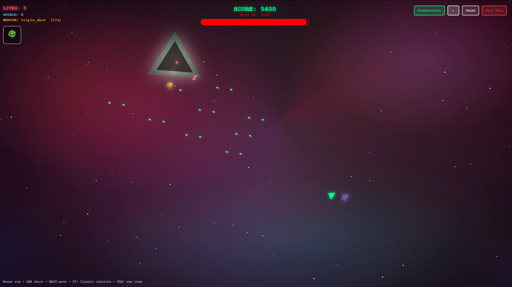
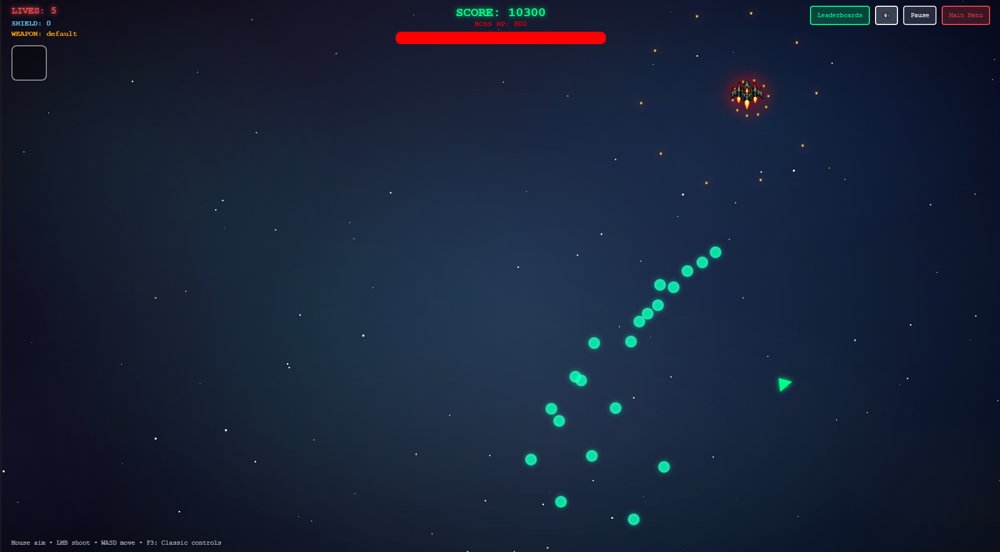

Independent Video Game Studio
We build games worth playing.
Circuit Specter Studio is a small independent team crafting original games with big ideas. Our first release, Asteroid Cats, is on the way.
About the Studio
Circuit Specter Studio is an independent video game development studio focused on creating original, polished experiences. We're a small team driven by a big passion for games, design, and storytelling.
Right now, all of our energy is focused on our debut title, Asteroid Cats. We believe in building games we genuinely want to play — and sharing that journey with our players along the way.
Asteroid Cats is developed by Matthew M.
Dungeon Roll
A free browser game from Circuit Specter Studio. Jump in, no download required.
Gameplay Preview
A first look at Asteroid Cats in action, plus a sample of the game's main theme music.
Beta Gameplay Footage
A look at Asteroid Cats gameplay in action.
Main Theme
A sample of the Asteroid Cats main theme, composed for the game.
Upcoming Game


Asteroid Cats
Release Date: Pending — Coming This Year
Asteroid Cats is the debut title from Circuit Specter Studio. Details are still under wraps, but we're excited to bring this project to players on desktop platforms soon.
Retail price: $9.99 at release.
More details, screenshots, and trailers coming as development progresses. Check back for updates.
We're Looking for Beta Testers!
Asteroid Cats is roughly 95% complete, and I've built every part of it myself. Before release, I'm looking for beta testers to play through the game, find bugs, and help me polish the final experience.
Beta Testers
Get early access to Asteroid Cats, put it through its paces, and report bugs, glitches, and anything that feels off — your feedback directly shapes the final release.
Let's be upfront about it
This is a one-person studio, so beta testing is a volunteer effort — there's no payment involved. What you get is free early access to Asteroid Cats before anyone else, and a direct hand in shaping the finished game.
As a thank you, testers who provide genuinely helpful feedback can be credited in the game. If you're keen to play early and help make Asteroid Cats the best it can be, I'd love to have you.
How to Sign Up
To apply, email your application and include:
- Why you'd be a good beta tester candidate
- Any previous games you've beta tested for
If the button doesn't work, just send your application to the contact email below.
Stay Connected
Want updates on Asteroid Cats and future projects from Circuit Specter Studio? Reach out or follow along.
Deathadder90@protonmail.com